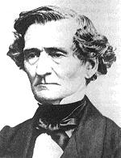

|  | Hector Berlioz (1803-1869) Catalogue des oeuvres |
| Biographie | Oeuvre | Références | Liens |
| Catalogues |
|
| Index alphabétiques |
Il est possible d'entendre des extraits d'oeuvre
(fichiers MIDI) en cliquant sur l'image suivante:  |
| Références |
|
| Liens |
|